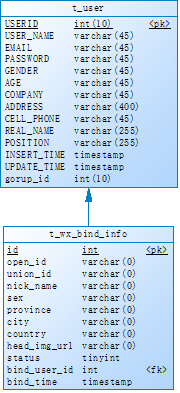
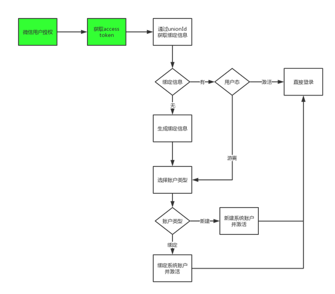
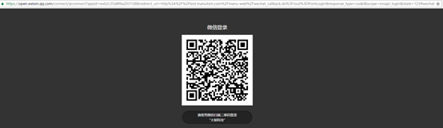
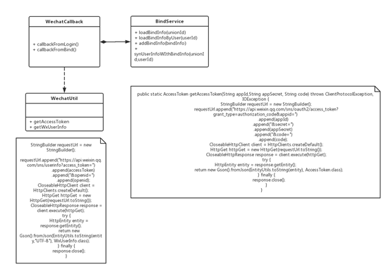
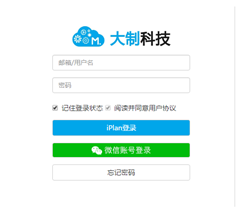
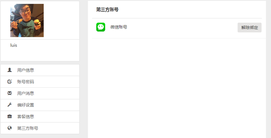

微信登录集成
平台上线快一年了，注册人数却始终不见起色，看着下面这注册走势可把大伙儿急的。一着急一上火就刷朋友圈，朋友圈，朋友圈？灵感来了有没有？
如果我们可以支持微信登录，那么微信日活5.7亿岂不都是我们的潜在客户了？不用多久升职加薪，当上总经理，出任CEO，迎娶白富美，走上人生巅峰。想想还有点小激动呢。
准备工作
说干就干，程序员一般套路：代码未动，文档先行。先找到微信开放平台（https://open.weixin.qq.com）-> 资源中心-> 网站应用，把开发文档刷一遍。不管看没看懂咱都是看过源代码，噢不原文档的人了。
象征性的总结一下，主要分三步走：
- 授权换code（开门）
- code换token（找钥匙）
- token获取用户消息（该干啥干啥）
当然，如果你觉得找到了钥匙你就拥有了全世界那你就simple simple了。用着人家的文档，坐拥5.7亿的日活，不交点保护费合适吗？
首先你要在开放平台注册一个账号，并通过开发者资质认证（300大洋一年）。然后到管理中心，创建一个网站应用并通过审核，这个不要钱。
注:这里面有一个很重要的字段，叫授权回调域，最好和实际开发的回调域名保持一致。
网上很多文章说可以配置成顶级域名，开发使用二级域名，反正我试过这样不通，
错误信息：redirect_uri 参数错误。
OK，到此为止，你才真正拥有了全世界。
集成设计
既然是登录集成首先我们需要审视用户模型，我们原来的用户模型是简单的用户密码认证方式，简单来说就是一张主用户表，加一堆外延表。这无疑给我们用户的扩展提供了便利，本着KISS的原则，我们的用户模型最终修改如下：
主要的改动点就是增加了一个t_wx_bind_info表，围绕这个数据模型，我们的逻辑可以如下展开：
- 首次微信登录，获取用户信息后保存至t_wx_bind_info, 此时的微信注册信息处于游离态，用户通过后续选择a) 绑定到现有用户 b) 创建新用户 将微信注册用户转化为激活态
- 未绑定微信用户登录，用户授权后获取access token，通过token里面的unionId获取加载t_wx_bind_info中游离态的用户信息，用户同样需要通过选择来将游离态转化为激活态
- 已绑定微信用户登录，用户授权后获取access token，通过token里面的unionId获取t_wx_bind_info中激活态的用户并做正常登陆，之后用户可以通过用户管理模块进行微信解绑
- 系统账号登录，普通账号可以通过账号管理模块进行账号绑定和解绑
也许一张图来的更直观点，
关于用户解绑后t_wx_bind_info的思考
正常来说我们有两个选择，
删除这条信息，每次绑定从头来过
恢复至游离态，下次绑定的时候直接使用
至于取舍见仁见智，每个选择都是优劣并存的，其实只要明白各自的优劣使用哪种方案并不重要。
开发实现
俗话说的好，talk is cheap, show me the code.
那接下来就是coding show了，主要是记录一下开发的过程，方便以后用到的时候复制粘贴。
登录页面
登录页面增加微信登录的按钮，至于背景图片可以到开放平台的资源中心下载相应尺寸的背景图片。
给登录按钮添加事件，
1 | var dName = document.domain; |
实现的效果，是点击按钮后会跳到微信自己的二维码页面。
注意点：
- RedirectUrl需要经过urlEncode
- AppId需要通过微信开发者资质认证后获得
- 其他参数按照文档填写即可
后台实现
程序入口是redirectUrl指向的地址，一般是一个restful的资源。类图如下：
在wechatCallback类中有两个分支分别处理扫码登录后的回调和账号登录后绑定微信的回调。主要的区别是重定向的页面和错误页面不同。
扫码登录
成功后跳转到信息补全页面，失败后跳转到登录页面并提示错误信息。
登录绑定
成功后跳转到当前页面，失败后跳转到当前页面并提示错误信息。
BindService主要处理t_wx_bind_info表的CRUD操作，sync方法用于同步微信信息和账户信息。
WechatUtil类是连接微信API的工具类，主要逻辑是通过httpClient组装请求信息与微信服务器进行信息交换。
效果展示
登录页面
扫码成功
跳转到信息补全，可以选择新创建账号还是绑定已有账号

选择绑定到已有账户，输入用户密码后就直接完成登录并可以看到微信绑定状态是已绑定

问题汇总
AppId参数不对
这个问题主要是在开发者资质认证阶段，我随便编个参数遇到的问题，填写正确的appId就可以了
RedirectUrl参数不对
这个问题前面也说过了，在网站申请的时候回调域名一定要和开发的redirectUrl一致。比如申请的回调域名是manulism.com, redirectUrl使用test.manulism.com则会出现这个问题。
本地测试的问题
由于微信平台配置的时候只接受回调域名，所以在本地要测试需要修改hosts文件里的域名mapping，文件目录在C:\Windows\System32\drivers\etc
新增一行：
192.168.8.254 test.manulism.com